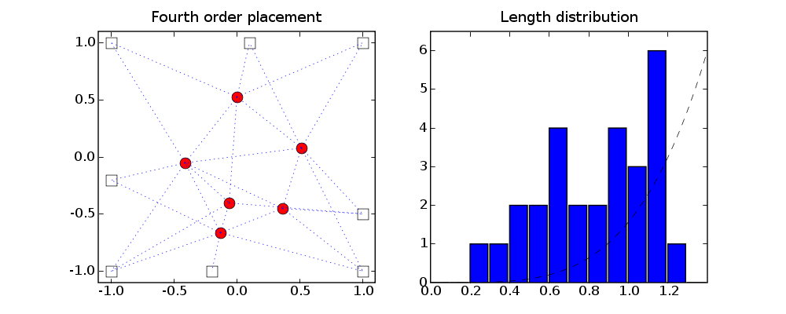
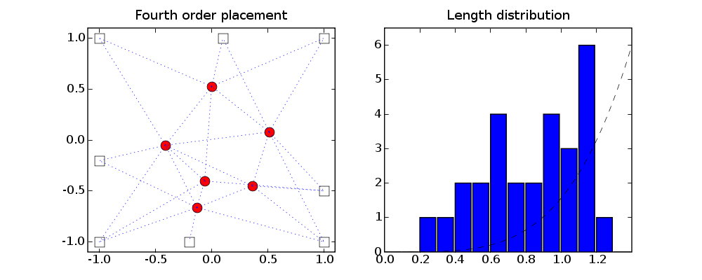

# Figures 8.15-17, pages 435 and 436.
# Linear, quadratic and fourth-order placement.
#
# The problem data are different from the example in the book.
import pickle
from cvxopt import lapack, solvers, matrix, spmatrix, sqrt, mul
from cvxopt.modeling import variable, op
solvers.options['show_progress'] = False
try: import pylab, numpy
except ImportError: pylab_installed = False
else: pylab_installed = True
data = pickle.load(open("placement.bin", "rb"))
Xf = data['X'] # M by n matrix with coordinates of M fixed nodes
M = Xf.size[0]
E = data['E'] # list of edges
L = len(E) # number of edges
N = max(max(e) for e in E) + 1 - M # number of free nodes; fixed nodes
# have the highest M indices.
# arc-node incidence matrix
A = matrix(0.0, (L,M+N))
for k in range(L): A[k, E[k]] = matrix([1.0, -1.0], (1,2))
# minimize sum h( sqrt( (A1*X[:,0] + B[:,0])**2 +
# (A1*X[:,1] + B[:,1])**2 ) for different h
A1 = A[:,:N]
B = A[:,N:]*Xf
# Linear placement: h(u) = u.
#
# minimize 1'*t
# subject to [ ti*I (A[i,:]*[x,y] + B)' ]
# [ A[i,:]*[x,y] + B ti ] >= 0,
# i = 1, ..., L
#
# variables t (L), x (N), y (N).
novars = L + 2*N
c = matrix(0.0, (novars,1))
c[:L] = 1.0
G = [ spmatrix([], [], [], (9, novars)) for k in range(L) ]
h = [ matrix(0.0, (3,3)) for k in range(L) ]
for k in range(L):
# coefficient of tk
C = spmatrix(-1.0, [0,1,2], [0,1,2])
G[k][C.I + 3*C.J, k] = C.V
for j in range(N):
# coefficient of x[j]
C = spmatrix(-A[k,j], [2, 0], [0, 2])
G[k][C.I + 3*C.J, L+j] = C.V
# coefficient of y[j]
C = spmatrix(-A[k,j], [2, 1], [1, 2])
G[k][C.I + 3*C.J, L+N+j] = C.V
# constant
h[k][2,:2] = B[k,:]
h[k][:2,2] = B[k,:].T
sol = solvers.sdp(c, Gs=G, hs=h)
X1 = matrix(sol['x'][L:], (N,2))
# Quadratic placement: h(u) = u^2.
#
# minimize sum (A*X[:,0] + B[:,0])**2 + (A*X[:,1] + B[:,1])**2
#
# with variable X (Nx2).
Bc = -B
lapack.gels(+A1, Bc)
X2 = Bc[:N,:]
# Fourth order placement: h(u) = u^4
#
# minimize g(AA*x + BB)
#
# where AA = [A1, 0; 0, A1]
# BB = [B[:,0]; B[:,1]]
# x = [X[:,0]; X[:,1]]
# g(u,v) = sum((uk.^2 + vk.^2).^2)
#
# with variables x (2*N).
AA = matrix(0.0, (2*L, 2*N))
AA[:L, :N], AA[L:,N:] = A1, A1
BB = matrix(B, (2*L,1))
def F(x=None, z=None):
if x is None:
return 0, matrix(0.0, (2*N,1))
y = AA*x + BB
d = y[:L]**2 + y[L:]**2
f = sum(d**2)
gradg = matrix(0.0, (2*L,1))
gradg[:L], gradg[L:] = 4*mul(d,y[:L]), 4*mul(d,y[L:])
g = gradg.T * AA
if z is None: return f, g
H = matrix(0.0, (2*L, 2*L))
for k in range(L):
H[k,k], H[k+L,k+L] = 4*d[k], 4*d[k]
H[[k,k+L], [k,k+L]] += 8 * y[[k,k+L]] * y[[k,k+L]].T
return f, g, AA.T*H*AA
sol = solvers.cp(F)
X4 = matrix(sol['x'], (N,2))
if pylab_installed:
# Figures for linear placement.
pylab.figure(1, figsize=(10,4), facecolor='w')
pylab.subplot(121)
X = matrix(0.0, (N+M,2))
X[:N,:], X[N:,:] = X1, Xf
pylab.plot(Xf[:,0], Xf[:,1], 'sw', X1[:,0], X1[:,1], 'or', ms=10)
for s, t in E: pylab.plot([X[s,0], X[t,0]], [X[s,1],X[t,1]], 'b:')
pylab.axis([-1.1, 1.1, -1.1, 1.1])
pylab.axis('equal')
pylab.title('Linear placement')
pylab.subplot(122)
lngths = sqrt((A1*X1 + B)**2 * matrix(1.0, (2,1)))
pylab.hist(lngths, numpy.array([.1*k for k in range(15)]))
x = pylab.arange(0, 1.6, 1.6/500)
pylab.plot( x, 5.0/1.6*x, '--k')
pylab.axis([0, 1.6, 0, 5.5])
pylab.title('Length distribution')
# Figures for quadratic placement.
pylab.figure(2, figsize=(10,4), facecolor='w')
pylab.subplot(121)
X[:N,:], X[N:,:] = X2, Xf
pylab.plot(Xf[:,0], Xf[:,1], 'sw', X2[:,0], X2[:,1], 'or', ms=10)
for s, t in E: pylab.plot([X[s,0], X[t,0]], [X[s,1],X[t,1]], 'b:')
pylab.axis([-1.1, 1.1, -1.1, 1.1])
pylab.axis('equal')
pylab.title('Quadratic placement')
pylab.subplot(122)
lngths = sqrt((A1*X2 + B)**2 * matrix(1.0, (2,1)))
pylab.hist(lngths, numpy.array([.1*k for k in range(15)]))
x = pylab.arange(0, 1.5, 1.5/500)
pylab.plot( x, 5.0/1.5**2 * x**2, '--k')
pylab.axis([0, 1.5, 0, 5.5])
pylab.title('Length distribution')
# Figures for fourth order placement.
pylab.figure(3, figsize=(10,4), facecolor='w')
pylab.subplot(121)
X[:N,:], X[N:,:] = X4, Xf
pylab.plot(Xf[:,0], Xf[:,1], 'sw', X4[:,0], X4[:,1], 'or', ms=10)
for s, t in E: pylab.plot([X[s,0], X[t,0]], [X[s,1],X[t,1]], 'b:')
pylab.axis([-1.1, 1.1, -1.1, 1.1])
pylab.axis('equal')
pylab.title('Fourth order placement')
pylab.subplot(122)
lngths = sqrt((A1*X4 + B)**2 * matrix(1.0, (2,1)))
pylab.hist(lngths, numpy.array([.1*k for k in range(15)]))
x = pylab.arange(0, 1.5, 1.5/500)
pylab.plot( x, 6.0/1.4**4 * x**4, '--k')
pylab.axis([0, 1.4, 0, 6.5])
pylab.title('Length distribution')
pylab.show()

 
